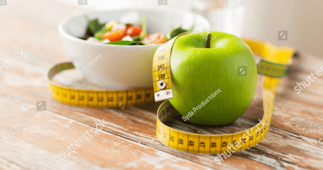

What is the importance of a balanced diet and good nutrition?
Why is good nutrition important?
While most of us try to eat well, it can be challenging to eat perfectly every day. Not only that, in our busy lives, we are often under constant pressure and stress, as well as being exposed to toxins, heavy metals, pesticides, chemicals, pollution and radiation. All of these things impact our overall health and wellbeing, and can deplete our bodies of essential nutrients.
Why do we need vitamins and minerals and what do they do?
Good quality nutrition is fundamental to our overall sense of health and wellbeing. Vitamins and minerals are in the foods that we eat, and our body needs them to grow, develop, function and thrive in day to day life. Most vitamins and minerals need to be obtained through our diet as our body cannot make them. Considering each vitamin has a specific role or many essential roles to play in our body, it’s easy to see why good nutrition is important.
For example:
Calcium
Calcium is vital for strong, healthy bones and teeth and the healthy functioning of your muscles. Calcium is in dairy products (milk, yoghurt and cheese), green leafy vegetables and bony fish.
Vitamin C
Vitamin C supports your immune system and helps form collagen, which is essential for healthy bones, gums and blood vessels. Good sources of vitamin C include citrus fruits (lemons, limes and grapefruit), strawberries and broccoli.
B vitamins
B vitamins help the body convert the food we eat into energy and support a healthy nervous system. Good sources of B vitamins include wholegrains, poultry and eggs.
Iodine
Iodine is a mineral that supports mental function and skin health. Good sources of iodine include seafood and fortified bread.
Zinc
Zinc supports healthy immune system function, connective tissue formation and helps with carbohydrate and fat metabolism. Good sources of zinc include seafood, meat and baked beans.
How do I get all the nutrients I need?
To ensure your getting the nutrients, you need to eat a wide variety of nutritious foods from all the different food groups. As a general guide, a balanced diet for an adult should include:
Vegetables and legumes
Aim for 5-6 serves a day. Different colours of fruits and vegetables contain different combinations of nutrients. So eat a wide variety of coloured vegetables to get the most nutritional value out of a meal.
Fruit
Adults need 3 to 6 serves a day depending on age and gender. Swapping highly refined grain products such as white rice and white bread for their wholegrain give you a nutrient and fibre boost.
Wholegrains & Cereals
Vitamin B6 may help with the relief of premenstrual tension symptoms (PMS).
Protein
Protein sources include lean meats, legumes, tofu, seafood, eggs, nuts and seed. For men need aim for 2½ to 3 serves a day, and for women, 2-2½ serves.
Dairy
Men should aim for 2½ to 3½ serves a day, women aged 19-50, 2½ serves a day and women over 51, 4 serves a day. If you use plant-based alternatives to milk, like soy milk, check that they have at least 100mg calcium per 100 ml.
Treats
Treat foods such as biscuits, cakes, burgers and potato chips should be kept to a minimum and not replace healthier food options.
What can i do if i’m not eating all the foods i know i should?
We all have busy times in our lives when we’re not eating a wide variety of nutritious foods every day, which is why a good, quality multivitamin might be beneficial. A multivitamin is like a nutritional insurance policy. It may help fill in the gaps when dietary intake is inadequate.
Who would benefit from a daily multivitamin?
Most of us could benefit from a daily multivitamin, but some people, in particular, have additional nutritional needs. Those who may benefit from a boost to their daily nutrition include:
Dieters
People on restrictive diets may be missing out on essential vitamins and minerals. A multivitamin may help fill the gap.
Vegetarians/Vegans
Animal foods contain several nutrients that can be difficult to find or absorb in a plant-based diet, such as vitamin B12, Iron and Zinc. A multivitamin may help support nutrient levels.
Tea and coffee drinkers
Tea and coffee can hinder the absorption of several nutrients, including vitamin B6, iron and magnesium. A multivitamin may be of benefit if you’re drinking more caffeine than usual.
Smokers
Smoking has been shown to deplete the body of vitamin C and beta-carotene, both important antioxidants. Cadmium, found naturally in tobacco also, decreases the bioavailability of selenium and inhibits zinc. Tobacco also reduces levels of several B vitamins.
Older age
The elderly are at risk of poor nutrition due to difficulty chewing and swallowing food, unpleasant taste changes caused by multiple medications, or isolation and loneliness that can depress appetite. Absorption of vitamin B12 from food also gets harder as you age.
Pregnancy
Getting enough folate is especially important for women who may become pregnant, other important nutrients for pregnancy including — iron, calcium, vitamin D, and DHA.
Certain medications
Some medications can deplete the body’s stores minerals or prevent the absorption of specific vitamins. Speak to your healthcare practitioner if you are taking medications long-term.
We all have times in our lives when we’re busy, stressed and not eating as well as we could. A multivitamin provides nutritional support when your dietary intake is inadequate and can help you meet your nutritional needs and support your health and wellbeing when you need it most.
Always read the label. Follow the directions for use.
Learn about which Pharmaton product may be appropriate for you